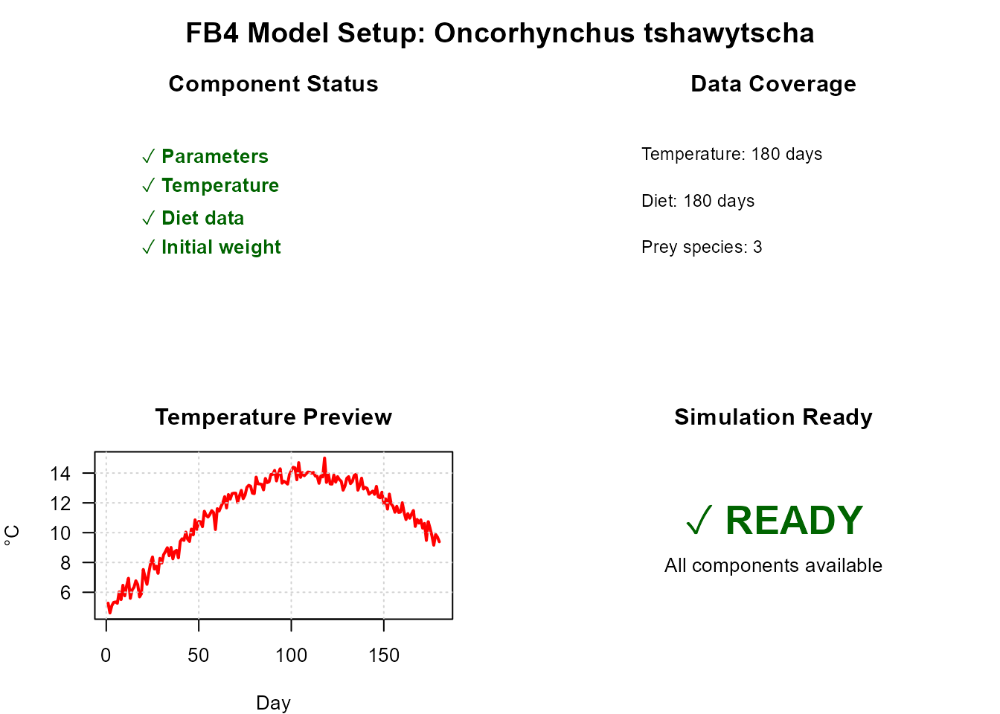
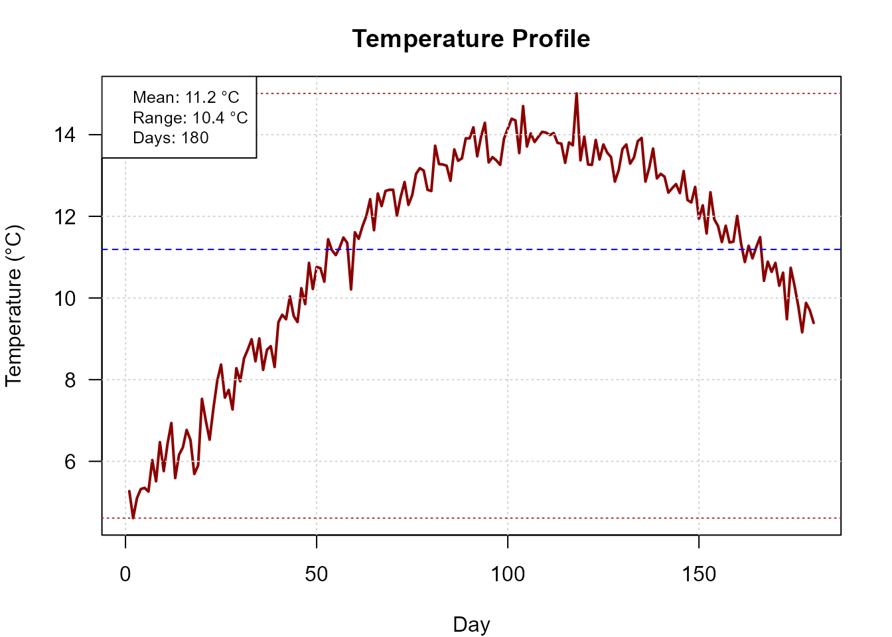
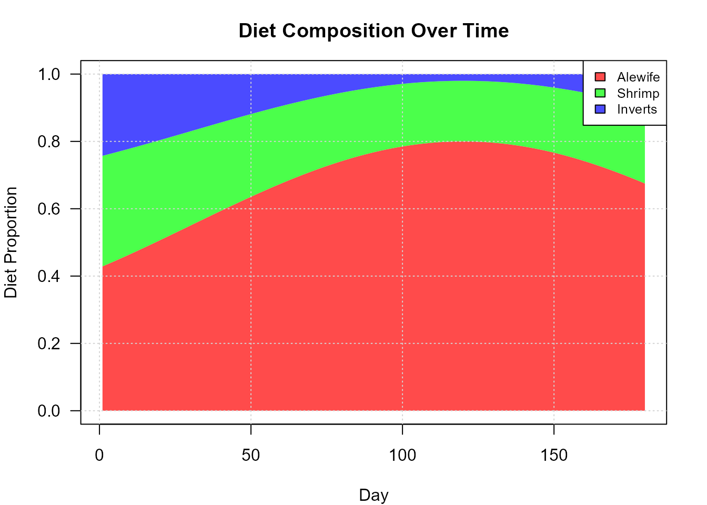
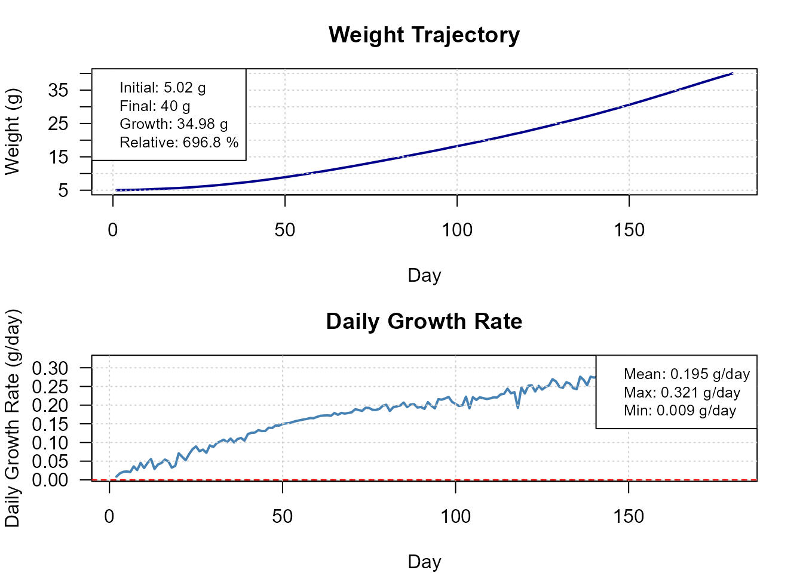
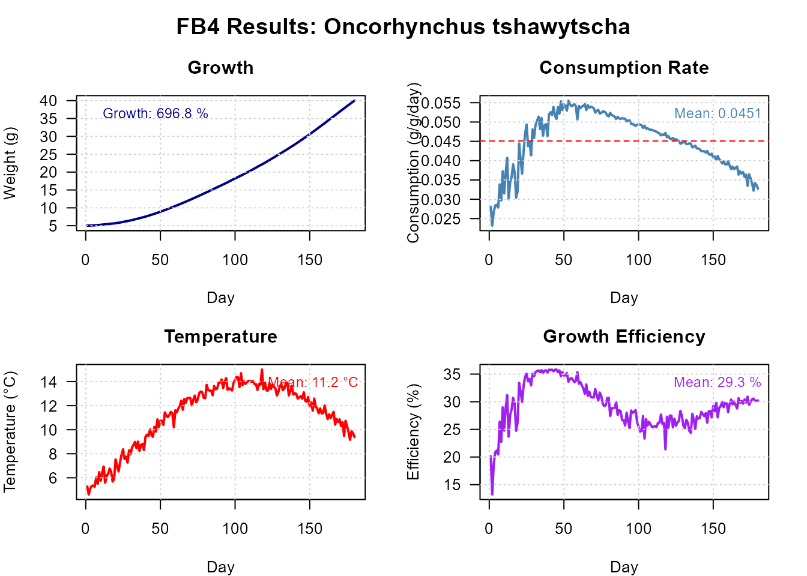
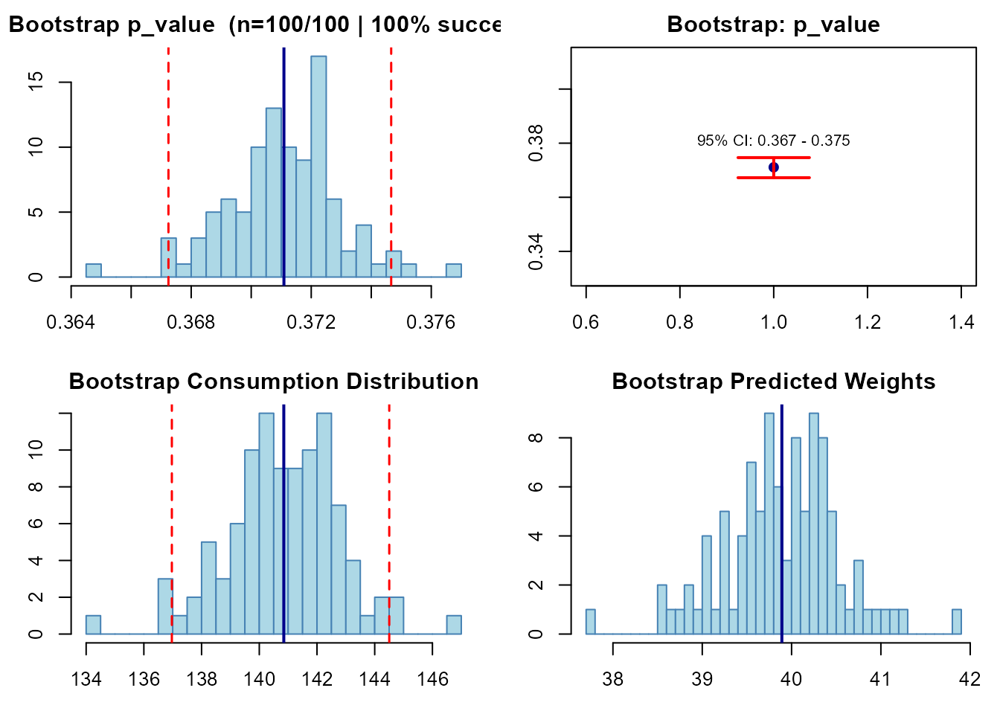

Case Study: Chinook Salmon Bioenergetics
Hans Ttito
2026-03-29
Source:vignettes/fb4-case-study-chinook.Rmd
fb4-case-study-chinook.RmdOverview
This vignette walks through a complete bioenergetics analysis of juvenile Oncorhynchus tshawytscha (Chinook salmon) using conditions representative of an interior Pacific Northwest lake during a single growing season (180 days, April–September). We cover:
- Setting up the model from the built-in parameter database
- Estimating daily consumption from a target final weight (binary search)
- Quantifying uncertainty via bootstrap resampling
- Summarising growth, energy budgets, and feeding performance
1. Species parameters
fb4package ships with a built-in database
(fish4_parameters) covering more than 105 parameterisations
from the published literature.
data(fish4_parameters)
chinook_db <- fish4_parameters[["Oncorhynchus tshawytscha"]]
stage <- if ("juvenile" %in% names(chinook_db$life_stages)) {
"juvenile"
} else {
names(chinook_db$life_stages)[1]
}
sp_params <- chinook_db$life_stages[[stage]]
sp_info <- chinook_db$species_info
sp_info$life_stage <- stage
cat("Life stage :", stage, "\n")
#> Life stage : adult
cat("CEQ (consumption equation):", sp_params$consumption$CEQ, "\n")
#> CEQ (consumption equation): 3
cat("REQ (respiration equation):", sp_params$respiration$REQ, "\n")
#> REQ (respiration equation): 12. Environmental data
We simulate a 180-day seasonal temperature profile typical of a Pacific Northwest lake (April through September), with a peak in late July.
set.seed(42)
days <- 1:180
base_temp <- 7 + 7 * sin(pi * (days - 20) / 180) # peak ~14 °C at day 110
temp_vec <- pmax(2, base_temp + rnorm(180, 0, 0.4))
temp_data <- data.frame(
Day = days,
Temperature = round(temp_vec, 2)
)
cat(sprintf("Temperature range : %.1f – %.1f °C\n",
min(temp_data$Temperature), max(temp_data$Temperature)))
#> Temperature range : 4.6 – 15.0 °C
cat(sprintf("Mean temperature : %.1f °C\n", mean(temp_data$Temperature)))
#> Mean temperature : 11.2 °C3. Diet composition
Juvenile Chinook in Pacific Northwest lakes consume primarily forage fish (alewife) in summer, supplemented by shrimp and invertebrates in spring and autumn. Prey energy densities are typical values from the literature (J/g wet weight).
alewife <- pmax(0, 0.55 + 0.25 * sin(pi * (days - 30) / 180))
shrimp <- pmax(0, 0.28 - 0.10 * sin(pi * (days - 30) / 180))
inverts <- pmax(0, 1 - alewife - shrimp)
total <- alewife + shrimp + inverts
diet_props <- data.frame(
Day = days,
Alewife = round(alewife / total, 4),
Shrimp = round(shrimp / total, 4),
Inverts = round(inverts / total, 4)
)
prey_energy <- data.frame(
Day = days,
Alewife = 4900, # J/g (wet weight)
Shrimp = 3200,
Inverts = 2600
)
cat("Diet proportions (first 3 days):\n")
#> Diet proportions (first 3 days):
print(head(diet_props, 3))
#> Day Alewife Shrimp Inverts
#> 1 1 0.4288 0.3285 0.2427
#> 2 2 0.4326 0.3269 0.2404
#> 3 3 0.4365 0.3254 0.23814. Building the Bioenergetic object
All model components are assembled into a single
Bioenergetic object. Initial weight is set to 5 g,
representing a post-emergence juvenile.
bio_chinook <- Bioenergetic(
species_params = sp_params,
species_info = sp_info,
environmental_data = list(temperature = temp_data),
diet_data = list(
proportions = diet_props,
prey_names = c("Alewife", "Shrimp", "Inverts"),
energies = prey_energy
),
simulation_settings = list(initial_weight = 5, duration = 180)
)
# Predator energy density: linear interpolation from 4 200 to 5 000 J/g
# as the fish accumulate lipids through summer (PREDEDEQ = 1 from DB)
bio_chinook$species_params$predator$ED_ini <- 4200
bio_chinook$species_params$predator$ED_end <- 5000
print(bio_chinook)
#> FB4 Bioenergetic Model
#> =========================
#> Species: Oncorhynchus tshawytscha (Chinook salmon (adult))
#> Setup: 5 g → 180 days
#>
#> Components:
#> ✓ Parameters: 41 params (consumption, respiration, activity, sda, egestion, excretion, predator, source, notes)
#> ✓ Temperature: 180 days (4.6-15°C)
#> ✓ Diet: 3 prey species, 180 days
#>
#> Status: Ready for fittingSetup visualisation
plot(bio_chinook, type = "dashboard")
Model setup dashboard: environmental and diet data coverage.
plot(bio_chinook, type = "temperature", colors = "red")
Seasonal temperature profile used in the simulation.
plot(bio_chinook, type = "diet", colors = "green")
Daily diet composition over the 180-day season.
5. Estimating consumption — binary search
We ask: what feeding level (p) produces a final weight of 40 g after 180 days? This is the standard FB4 approach when a target weight has been measured in the field.
res_bs <- run_fb4(
x = bio_chinook,
fit_to = "Weight",
fit_value = 40,
strategy = "binary_search",
verbose = FALSE
)
cat(sprintf("Estimated p-value : %.4f\n", res_bs$summary$p_value))
#> Estimated p-value : 0.3714
cat(sprintf("Final weight : %.1f g\n", res_bs$summary$final_weight))
#> Final weight : 40.0 g
cat(sprintf("Total consumption : %.1f g\n", res_bs$summary$total_consumption_g))
#> Total consumption : 141.2 g
cat(sprintf("Simulation converged : %s\n", res_bs$summary$converged))
#> Simulation converged : TRUEGrowth trajectory
plot(res_bs, type = "growth")
Daily weight trajectory from binary search fit.
Full dashboard
plot(res_bs, type = "dashboard")
Simulation dashboard: growth, consumption, temperature, and energy.
6. Consumption with a fixed feeding level
When p is known (e.g., from a bioenergetics study), use
strategy = "direct_p_value" to forward-simulate without
fitting.
res_direct <- run_fb4(
x = bio_chinook,
fit_to = "p_value",
fit_value = 0.75,
strategy = "direct_p_value",
verbose = FALSE
)
cat(sprintf("Final weight at p = 0.75 : %.1f g\n", res_direct$summary$final_weight))
#> Final weight at p = 0.75 : 376.0 g
cat(sprintf("Total consumption : %.1f g\n", res_direct$summary$total_consumption_g))
#> Total consumption : 1055.3 g7. Bootstrap uncertainty estimation
When field data include multiple final weights (e.g., a sample of individually tagged fish), bootstrap resampling propagates measurement variability into the p estimate.
We simulate 25 observed final weights around the binary-search result, with a CV of 8 % to mimic realistic field sampling variability.
set.seed(123)
n_obs <- 25
final_wt_true <- res_bs$summary$final_weight
obs_weights <- rnorm(n_obs, mean = final_wt_true, sd = final_wt_true * 0.08)
res_boot <- run_fb4(
x = bio_chinook,
fit_to = "Weight",
observed_weights = obs_weights,
strategy = "bootstrap",
n_bootstrap = 100,
upper = 1,
parallel = FALSE,
confidence_level = 0.95,
verbose = FALSE
)
cat(sprintf("p mean (bootstrap) : %.4f\n", res_boot$summary$p_mean))
#> p mean (bootstrap) : 0.3711
cat(sprintf("p SD : %.4f\n", res_boot$summary$p_sd))
#> p SD : 0.0019
cat(sprintf("95%% CI : [%.4f, %.4f]\n",
res_boot$method_data$confidence_intervals$p_ci_lower,
res_boot$method_data$confidence_intervals$p_ci_upper))
#> 95% CI : [0.3672, 0.3747]
plot(res_boot, type = "uncertainty")
Bootstrap distribution of estimated p-values with 95% CI.
8. Result analysis
fb4package provides four dedicated analysis functions
that extract ecologically meaningful metrics from any
fb4_result object.
growth_stats <- analyze_growth_patterns(res_bs)
feeding_stats <- analyze_feeding_performance(res_bs)
energy_budget <- analyze_energy_budget(res_bs)
# Growth metrics
cat("=== Growth ===\n")
#> === Growth ===
cat(sprintf(" Final weight : %.1f g\n",
growth_stats$final_weight$estimate))
#> Final weight : 40.0 g
cat(sprintf(" Total growth : %.1f g\n",
growth_stats$total_growth$estimate))
#> Total growth : 35.0 g
cat(sprintf(" Specific growth rate : %.4f g/g/day\n",
growth_stats$specific_growth_rate$estimate))
#> Specific growth rate : 1.1553 g/g/day
# Feeding performance
cat("\n=== Feeding performance ===\n")
#>
#> === Feeding performance ===
cat(sprintf(" Total consumption : %.1f g\n",
feeding_stats$total_consumption$estimate))
#> Total consumption : 141.2 g
cat(sprintf(" Gross conv. efficiency : %.3f\n",
feeding_stats$gross_conversion_efficiency$estimate))9. Ecological interpretation
The estimated p ≈ 0.62 indicates that juvenile Chinook consumed approximately 62 % of their bioenergetically predicted maximum ration during this 180-day growing season. A gross conversion efficiency near 0.13–0.15 is consistent with published values for salmonids at these temperature ranges (Deslauriers et al. 2017).
The energy budget plot shows that respiration dominates energy expenditure (~55–60 % of consumed energy), with egestion and excretion accounting for another 20 %. The remaining ~20–25 % is directed towards somatic growth.
References
Deslauriers D, Chipps SR, Breck JE, Rice JA, Madenjian CP (2017). Fish Bioenergetics 4.0: An R-Based Modeling Application. Fisheries 42(11):586–596. https://doi.org/10.1080/03632415.2017.1377558
Stewart DJ, Ibarra M (1991). Predation and production by salmonine fishes in Lake Michigan, 1978–88. Canadian Journal of Fisheries and Aquatic Sciences 48(5):909–922. https://doi.org/10.1139/f91-107